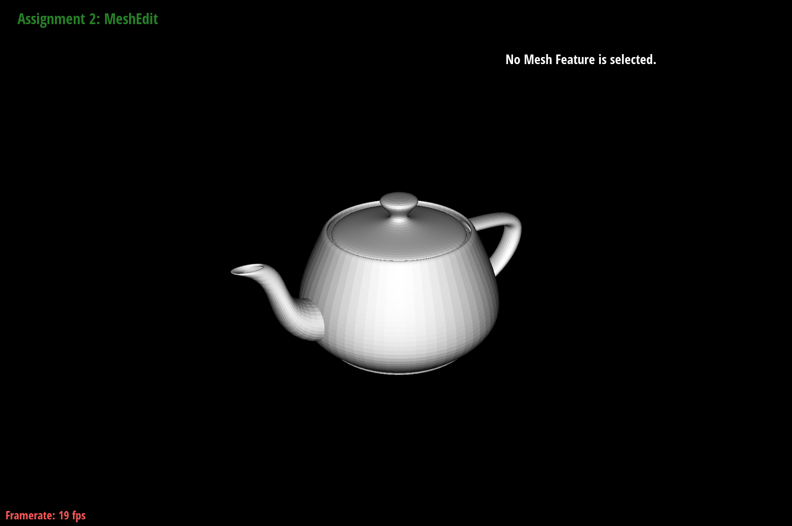
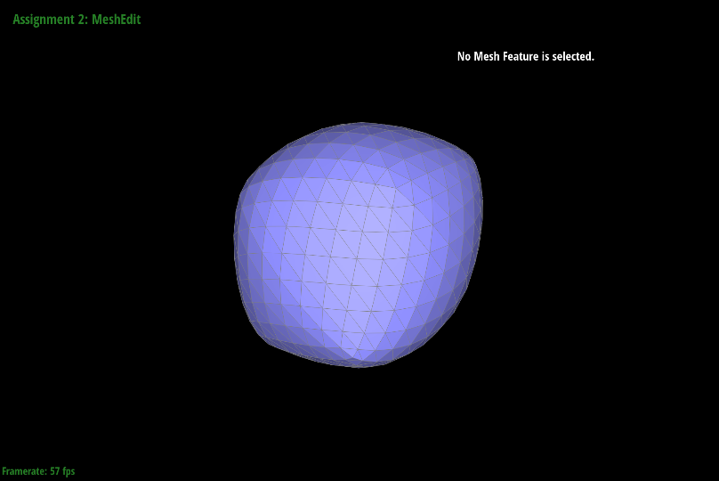

Give a high-level overview of what you implemented in this homework. Think about what you've built as a whole. Share your thoughts on what interesting things you've learned from completing the homework.
Section I: Bezier Curves and Surfaces
Part 1: Bezier curves with 1D de Casteljau subdivision
de Casteljau subdivision is an algorithm we can use to generate bezier curves given n control points. From a high level, let's start by looking at the 4 control points. In words, this algorithm using a simple interpolation to subdivide each line until you're only left with one point. The key mathematical principle is the idea that given parameter t that ranges from 0 to 1, we can scale each endpoint of a line respectively and use superposition to end up with a point that travels from starting position p0 to ending position p1 as t goes from 0 to 1. This is what is done using linear interpolation. Say we have two points: p0 and p1 where p0 is the starting position and p1 is our target position. When t = 0, we want to be at position p0. Hence, a full contribution of p0 is required and we want 0 contribution from p1. This gives us the following equation: (1 - t) * p0 + t * p1. To verify, when t = 1, we should be at p1. This is indeed the case, because (1 - 1) * p0 + 1 * p1 = p1. As we can see, repeatedly doing this over and over for each line, and connecting the interpolated points themselves through a line will result in a single point that generates our bezier curve.
6 Control Points
5 Control Points
4 Control Points
3 Control Points
2 Control Points
Final Curve Point
Final Bezier Curve
Adjusted Bezier Curve
Part 2: Bezier surfaces with separable 1D de Casteljau
Bezier surfaces work very similarly to bezier curves, just in another dimension. In fact, in the simplest description, they can be considered bezier curves just interpolated many times. To start, let's look at the diagram below. Imagine we treat each color line as it's own bezier curve. In essense, imagine controlPoints[0] represented the red curve, controlPoints[1] represents green, and controlPoints[2] represents orange. Then, all we need to do to generate our bezier surface is to fully interpolate each controlPoints[i] to get the black X points, and then assume each black X point forms its own bezier curve, and then fully interpolate that. In the code, this is exactly what we do. First, we write evaulateStep which does the same thing as in part 1 but for 3D points instead of 2D. Then, we call evaluate1D, which calls evaulateStep however many times it needs to in order to get the single curve point(black X). Note that all of this is done with the parameter u. Then, evaluate can be thought of as a function that, for each controlPoints[i], fully interpolates it, collects all the black X points, and then fully interpolates those points with the parameter v. That's it!
Bezier Surface Breakdown

Teapot
Section II: Triangle Meshes and Half-Edge Data Structure
Part 3: Area-weighted vertex normals
To calculate a weighted normal vector, we need to perform three main steps sequentially: 1) loop through all faces that the given vertex is part of, for each face(if not boundary face) calculate the normal vector and scale it by the area of the face, aggregate all these normals across all f faces, and then normalize the vector. This will bias the final weighted normal towards faces with greater area. Implementing this is quite straightforward - to iterate through faces of the given vertex, we get the current halfedge's twin and it's next edge, leading us to be able to access the next face.
Since we can indefinitely loop in a circle, we add a visited variable to make sure we don't terminate the loop before we've actually visited any vertex. In retrospect, this could also be solved using a do-while loop. We then cross two vectors that form this triangle, and the magnitude of that cross product is the area of the parallelogram formed by the two vectors. Thus, we need to divide this by 2 to get the area of the triangle. We can then sum all of these up and then normalize it to get our weighted normal vector.
Weighted Normal Iteration
Before Weighted Area Normal
After Weighted Area Normal
Part 4: Edge flip
I first made an assuption of what the goal state would look like. For simplicity, I assume we begin with a vertical edge e0 as shown in the diagram on the left. To keep track of everything that would change, I save every halfedge, edge, vertex, and face in the before stage, and I name them appropriately based on where these elements should go given my earlier assumption. Then, I pretend the edge was actually horizontal and not vertical. In that case, I can just reassign every halfedge, edge, vertex, and face to follow the nomenclature on the right diagram. If I reassign everything from scratch, then it makes it significantly easier. I got pretty lucky with debugging, because I had just one issue which was in the first line and I was able to catch it quite quickly(I was assigned h_left_top's vertex as v_left instead of v_top). However, drawing the diagrams out and having an overall plan to save every previous element and then reassign really helped. It made my code more verbose but significantly easier to understand. Instead of an eventful debugging journey, I had a thorough drawing session to try and make sure this worked close to first try, and the result of that are the diagrams below.
Flipping An Edge
Teapot Flipped Edge 1
Teapot Flipped Edge 2
Teapot Flipped Edge 3
Teapot Flipped Edge 4
Part 5: Edge split
Edge-splitting is the process of creating sub-triangles given an existing triangle. More specifically, if we have an edge dividing and forming two neighboring triangles, we can split this edge to create 4 triangles. This operation is useful when we want to upsample or increasing the resolution of our mesh. I used an approach very similar to the previous part. My first thought was to delete the splitting edge, but then I realized that as long as we move it up and re-interpret it as half of the original edge, then there would be no need to do that. To start, I drew out what the normal pre-split diagram would look like. Below, that diagram is the one above. Then, assuming the split is successful, I drew out what elements would need to be added(halfedges, edges, new central vertex, faces). At this point, it became easy to reassign every element's attributes based on the revised edge-split diagram. To debug, luckily I didn't have too much trouble. At first, I had a few bugs with vertex assignment when updating the halfedges but after reading the code thoroughly I was able to catch them fairly quickly.
Splitting An Edge
Before Edge Splits
After Single Edge Split
After Multiple Edge Splits
After Flips & Edge Splits
Part 6: Loop subdivision for mesh upsampling
Loop subdivision is a method for refining triangular meshes to create smoother surfaces by increasing the number of triangles while adjusting vertex positions. First, we compute new positions for all existing vertices based on the loop subdivision rule, storing these positions while marking them as original mesh vertices. Next, new vertex positions are computed for each edge and stored accordingly. The mesh is then refined by splitting all original edges, ensuring that newly created edges are identified separately. Specifically, this is taken care of in split edge, where we set the isNew attributes such that the upsample function can differentiate new vertices and edges in the next step. Specifically, it's used to flip any new edge that connects an old vertex to a new vertex. Lastly, the newly computed vertex positions are applied to update the mesh, completing the subdivision process.
Raw Cube
Cube Upsampled Once
Cube Upsampled Twice

Cube Upsampled Thrice
For simplicity, let's take a look at the cube file. Sharper features tend to smoothen out becausewe create edges and we're in a sense averaging out the change between each mesh triangle. Which is why, if we add relatively more triangles towards points which we want to keep sharp, upsampling will have less of an averaging effect and will tend to smoothen out our mesh less. As shown below, we split the edges near the selected vertex and then upsample. When we rotate the cube and view it from the side, we can see that the vertex and feature around the original vertex is much sharper.
Vertex In Question
Split Edges Near Vertex
Maintains Sharper Feature
The main reason the cube becomes assymetrical is because the original DAE file has faces that are asymmetrical. Upsampling just increases resolution, but the underlying mesh will remain asymmetrical. To fix this, we can simple split each of the edges on the faces to create a symmetrical mesh. Then if we upsample, we get the first 4 images below(Figure 1-4). To further test, we can continue to split each edge so that there's higher resolution on the sharper parts of the cube, and then the cube will also remain symmetrical. If we upsample that, we get the last two images below(Figure 5-6). Notice the visibility of the edge points in the upsampled mesh that poke out - as we increase resolution on the edges, these will fade away as we continue to upsample.